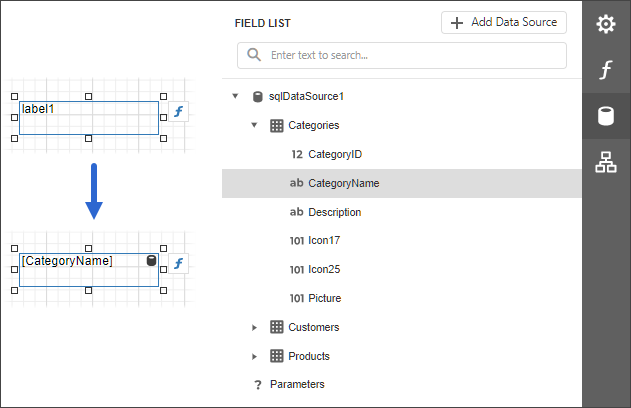
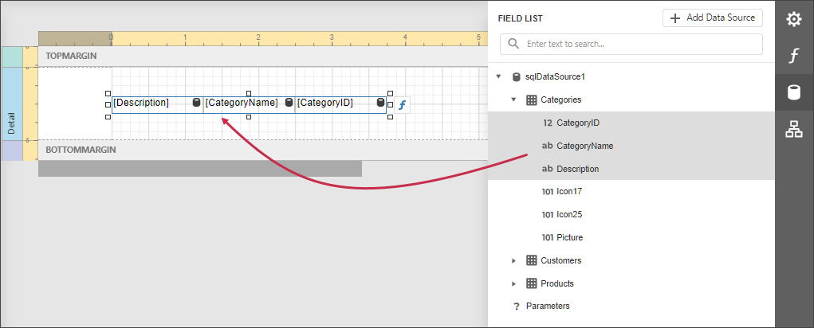
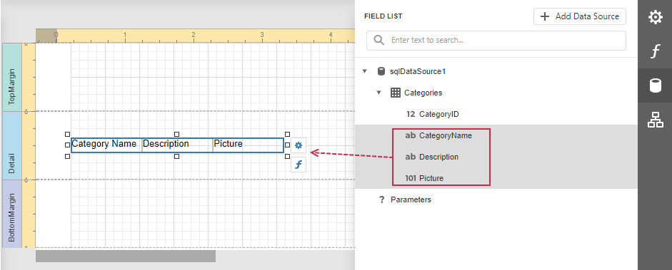

Bind Report Controls to Data
You can use the following approaches to include data source information in your report:
Use the Field List
After you bind your report to data, the Field List panel displays the data source hierarchy and provides access to available data fields.
Drop a data field from this panel onto a report's surface to create a new report control bound to the corresponding field.

Drop a data field onto an existing control to bind this control to the corresponding field.

You can also drop an entire data table onto a report to create a Table control with its cells bound to corresponding data table fields.

To select multiple fields in the Field List, hold CTRL or SHIFT and click the fields. Drop these fields onto a report to create a new table.

Select multiple data fields, a query, or a table in the Field List. Hold Shift when you drag the fields and drop them onto the report design area. This creates a data table with data field names.

Use the Properties Panel
Select a report control and switch to the Properties panel. Click the Text property's marker and select Text Expression from the popup menu. Select a data field or construct a binding expression in the invoked Expression Editor.

You can use the same approach to specify expressions for all the control properties. See Shape Report Data for more tutorials.